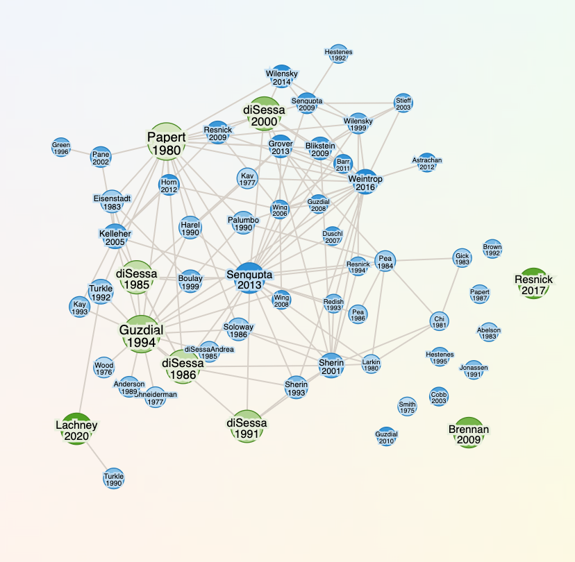
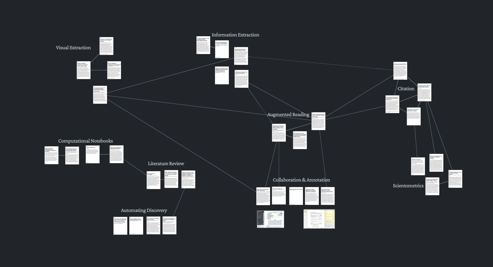
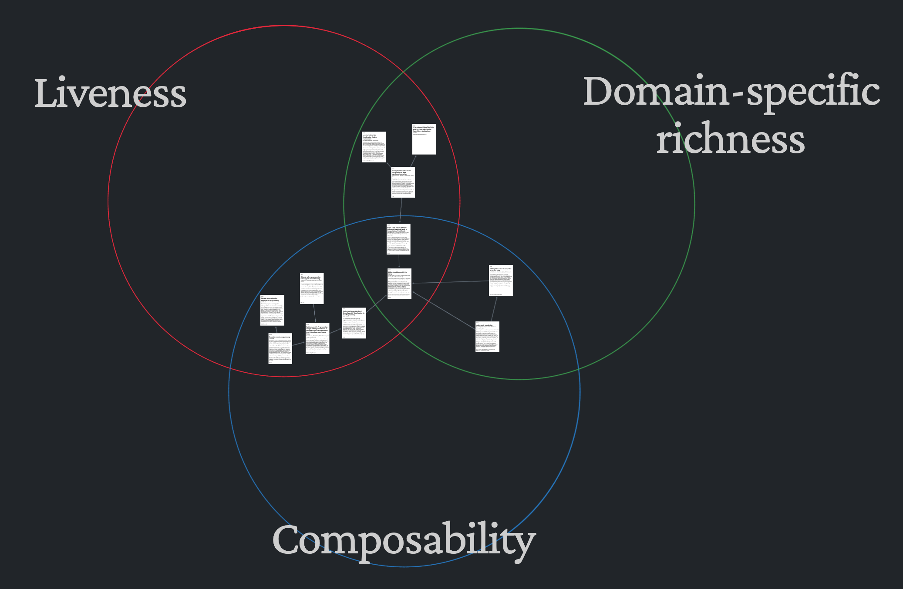
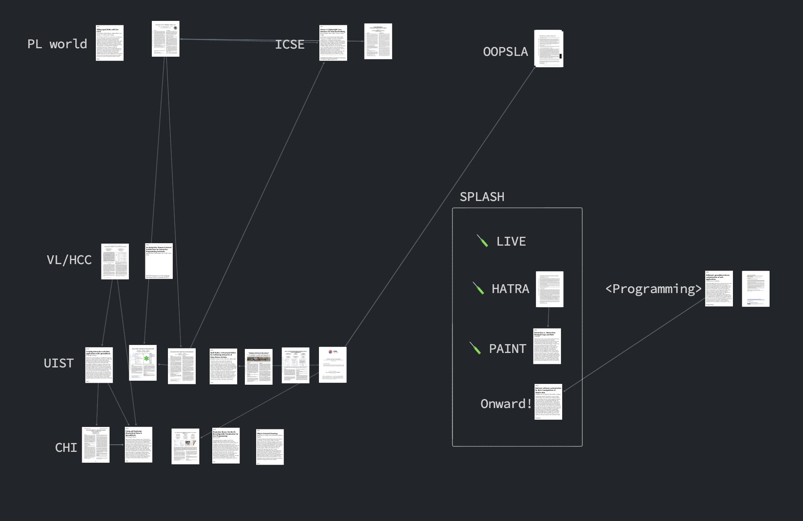

Literature review on a free-form canvas
How might literature review – an intentional, creative, collaborative process – be supported by a digital workspace? Following the theme of two-dimensional organization that I explored in Scrollscape, I built a canvas-based web application for literature review called Citespecific.

Copy text from webpages or documents with buried DOI/s2id identifiers. Paste it into Citespecific. An icon for each paper will be added to the canvas. Papers can be freely rearranged. References are shown as arrows. When a paper is selected, links to the paper’s Semantic Scholar page and (sometimes) PDF are visible.
Citespecific is two-dimensional and shows references as connections. But it’s not supposed to be an algorithmically-generated visualization with balls springing around all over the place:
🚫 not this →

Rather, Citespecific is supposed to be a thinking space where a researcher (or team) can grow their understanding of the literature alongside a durable, annotated map.
Citespecific is built with tldraw, an open-source drawing app. Through tldraw, Citespecific provides an infinite canvas for papers to live on, together with standard drawing tools like shapes, arrows, and text.
Three examples of maps made with Citespecific:



I made Scrollscape for an assignment in CSE 599D.